Ochi, Kochi: things to do, food and stays
Ochi · Kochi
Ochi
Highlighted on the Kochi map.

Stay
山笑ふ横畠集落活動センター

Yama Warafu Yokohata Shuraku Katsudo Center
Dining
自由軒 本店

Jiyu Ken Hon
麺や倉橋
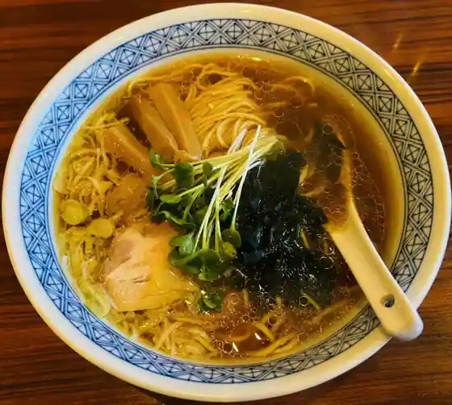
Men Ya Kurahashi
居食屋 かどた
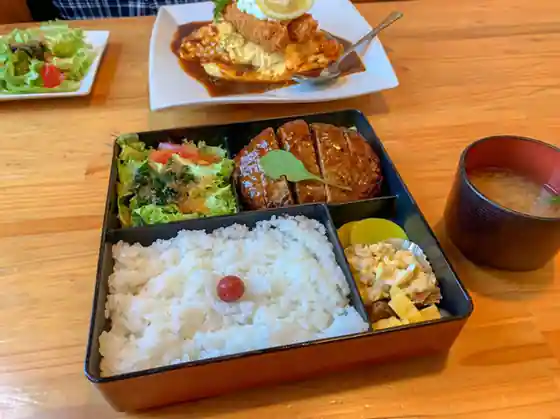
Kyo Shoku Ya Kadota
松田精肉店
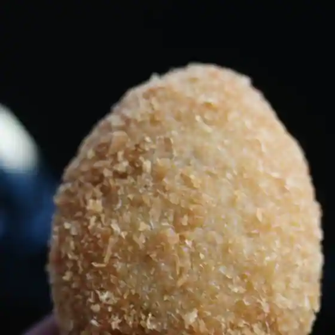
Matsuda Seiniku
越知町観光物産館 おち駅
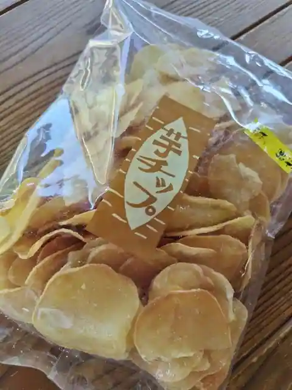
Ochi Machi Kanko Bussan Kan Ochi Eki
ドライブイン片岡
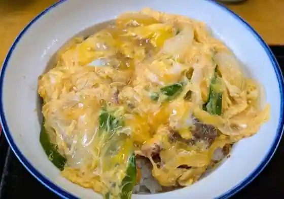
Doraibuin Kataoka
おち町のコーヒースタンド 西中商店
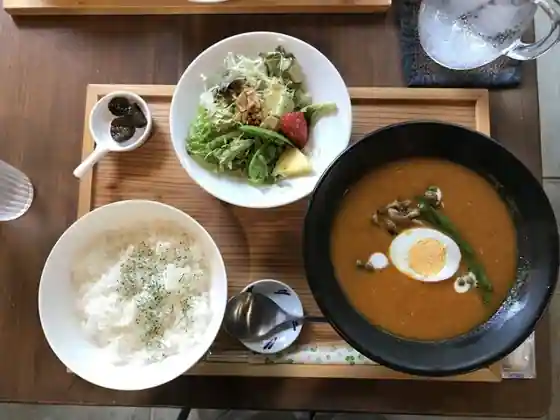
Ochi Machi No Coffee Sutando Nishinaka Sho
喫茶 おちつき処
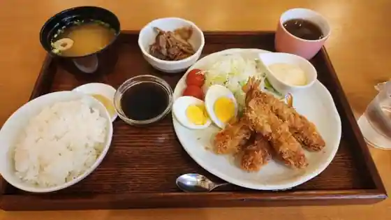
Kissa Ochitsuki Tokoro
たこやき ねぎ丸
Takoyaki Negi Maru
味楽
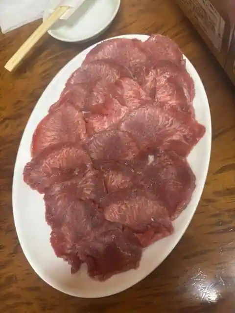
Aji Raku
フクロー飲食店
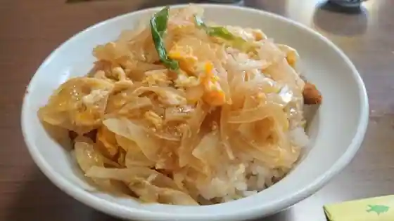
Fukuro Inshoku
メルヘン 四国銀行前店
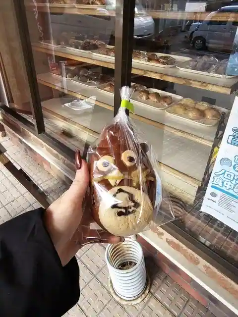
Meruhen Shikoku Ginko Mae
焼菓子G
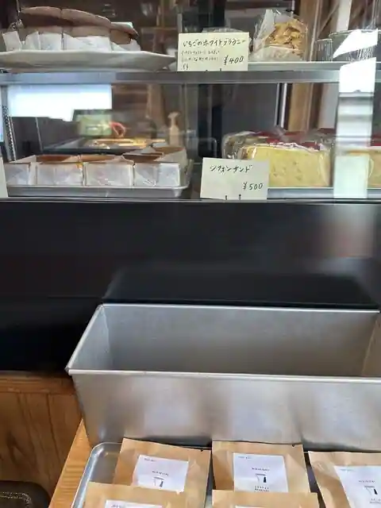
Yaki Kashi G
仙八
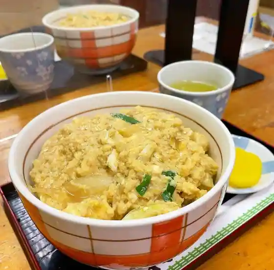
Senpachi
花
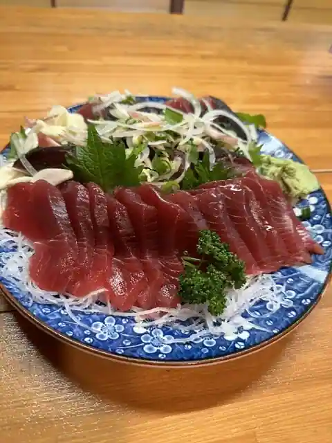
Hana
狩女
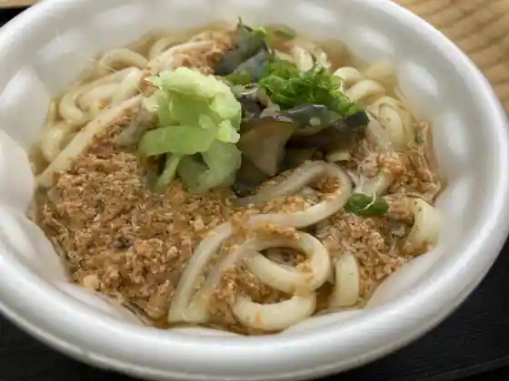
Kari Onna
Sights
Yokokura Yama
Ochi Town Hall

Naka Niyodo Hashi

Odaru Falls

Yokokura Yama Nature no Mori Museum

Heike no Miya
Antoku Tenno Jiju Noto Shu Noritsune Sekihi